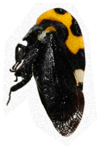
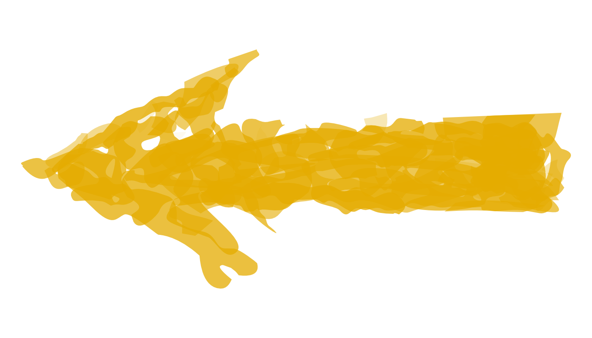
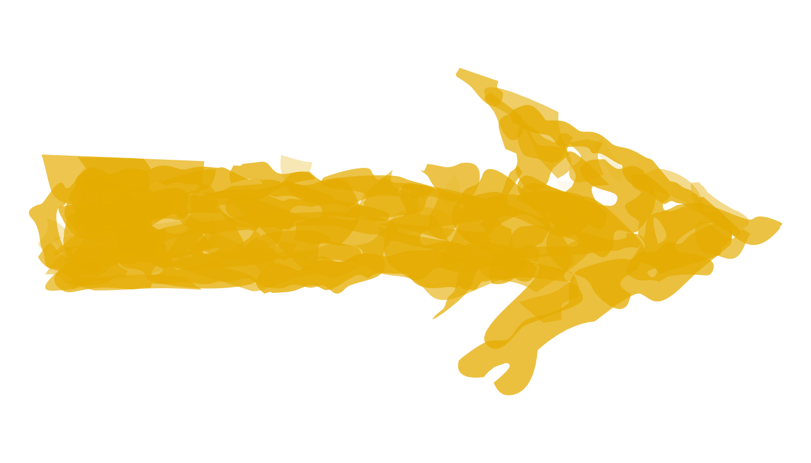
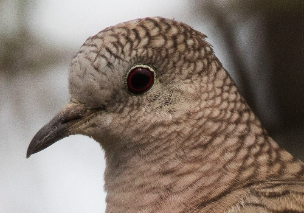

X


EUCALIPTO
TORTOLITO
COLALARGA
COLUMBINA INCA
Un pájaro callado. Se mueve entre
árboles, pero se observó principalmente en el suelo, buscando semillas
e insectos que comer.
Se le observó sentado en pareja, en las ramas bajas de un ahuexotl.

 EUCALIPTO
EUCALIPTO
EUCALIPTO
EUCALIPTO